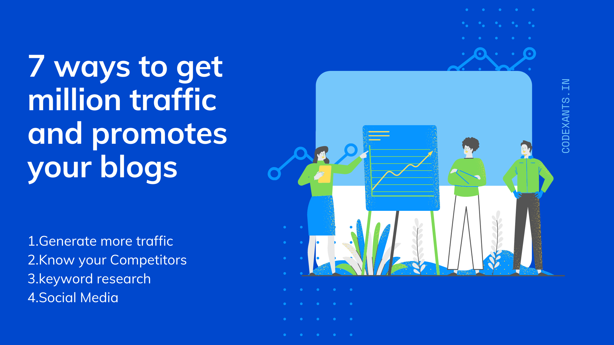

10 ways to get million traffic and promotes your blogs

1.Generate more traffic
Many bloggers believe that the more you update your blog, the more traffic you will receive. Google gives high priority to websites with fresh content, so if you want more traffic to your blog then update your blog every day
Read More
2.Use photos related to the blog
People want visual content to ensure that their purchasing decisions are valid and not. When customers are able to view a product material or trial, they are 50% more likely to make a purchase decision than to read a text review.
Read More
3.Social Media
Use the photo or topic related to the recent incident in your blog, which increases the visibility of your blog to the top and the audience also searches more recently.
Instagram, On social media, you have to use visuals to drive a million traffic to your website. One of the best routes for traffic is Instagram. Over 50+ million photos and videos are shared every day and the audience on Instagram is very active and it is very easy to post Instagram you can see it easily
Read More
4.Share Options
About 50% of news article content was read on tabs or mobile devices compared to laptops, desktops.
Share buttons on mobile devices are important for driving social media traffic. If your post article will be easy to share, then after reading the audience will share more and more which is very important for your blog.
Read More
5.Know your Competitors
Finding out how much your competitors are analyzing. Social media competitive analysis simply helps you spread your social media traffic. It is very useful for you, from here you can get Successful Post Time and Day, Types of published content (videos, images quotes, etc.), and Most Usable Social Channels.
Read More
6.keyword research
here you can get those keywords that the audience type in Google or any other search engine, from here you can get those keywords and use in your blog.
Read More
7.Write Useful Article
If you write a useful article, the audience on your blog will want to revisit it, which will generate more traffic.
Read More
8.Link Internally
When creating and publishing content, be sure to keep an eye out for internal link opportunities. This not only helps with SEO, but also a better, more useful experience for the user - which is the cornerstone of increased traffic to your website.
Read More
9.Mix It Up
Short, news-based blog posts with long-form content as well as videos, infographics and data-driven pieces for maximum impact.
Read More
10.Pay Attention to On-Page SEO
Optimizing your content for search engines is still a valuable and meaningful practice. What about the meta description? Are you making the most of the text in the image? Are you creating internal links for new content? It does not take ages to optimize for on-page SEO, and it can help boost your organic traffic
Read More